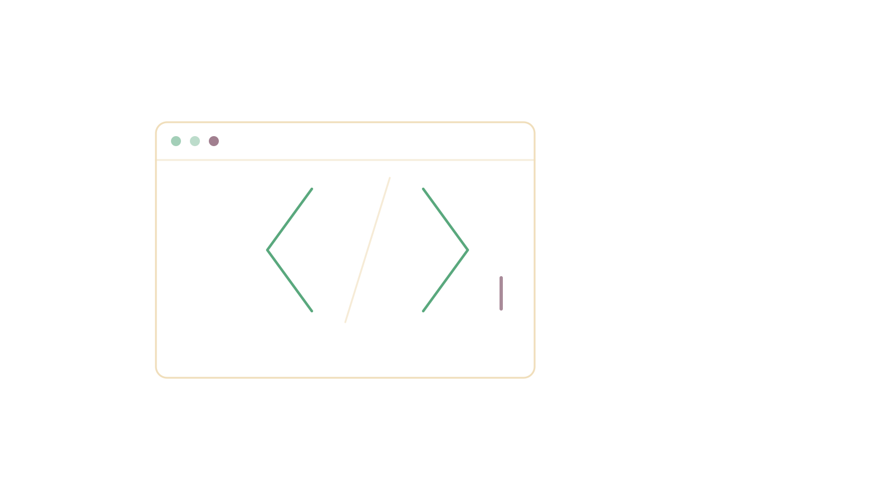
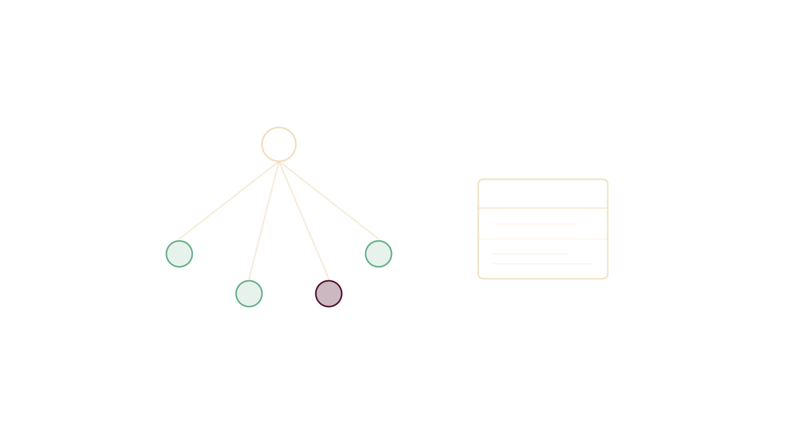
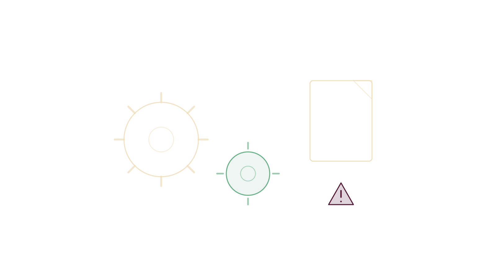
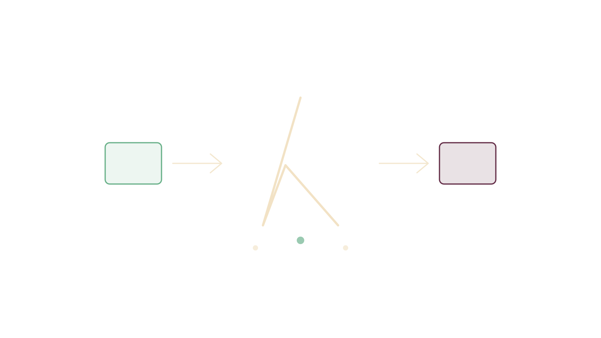
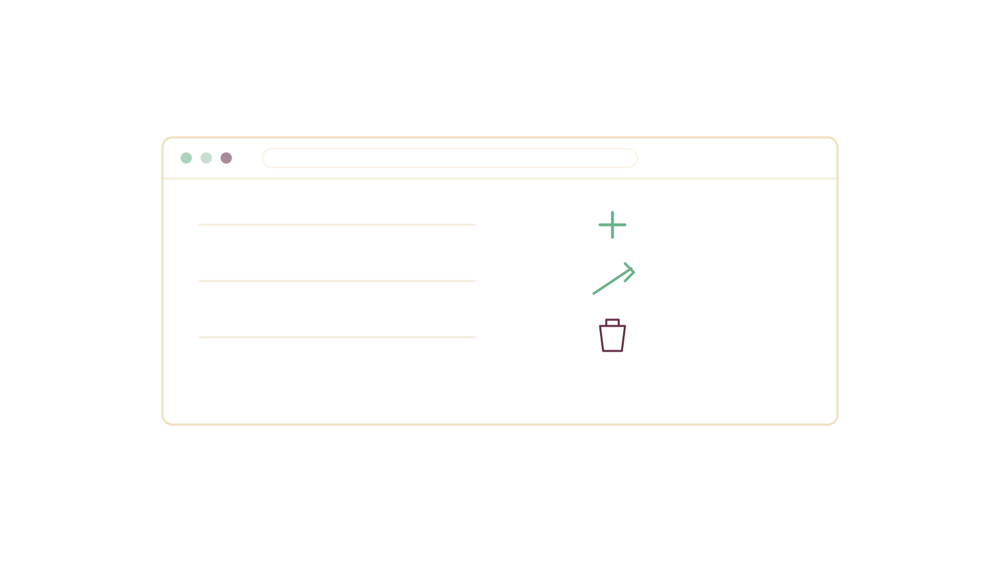

Portada
Técnicas de Programación
Presentación del curso
Universidad de Antioquia · Ingeniería de Sistemas · 2508307
Unidad 0
Repaso
- Generalidades de los lenguajes de programación
- Eligiendo el lenguaje de programación para el tipo de problema y el tipo de solución
- IDE y framework
- Cómo manejar el lenguaje de programación
- Tipos y estructuras de datos que manejan los lenguajes de programación
- Expresiones aritméticas y lógicas: operadores, prioridades, asociatividades, evaluación y equivalencia con expresiones algebraicas
- Ciclos
- Colecciones de datos que maneje el lenguaje (vectores, matrices y otros)
- Métodos de búsqueda, ordenamiento, recorrido, recuperación e ingreso en colecciones de datos
- Elementos del lenguaje para representar pilas, colas, listas, árboles, mapas, entre otros
- Manejo de strings y expresiones regulares
- Conversión entre tipos de datos
- Recursión

Unidad 1
Paradigmas de Programación
- ¿Qué son los paradigmas?
- Paradigma imperativo — ventajas, desventajas, lenguajes, ejemplo
- Paradigma declarativo — ventajas, desventajas, lenguajes, ejemplo
- Paradigma funcional — ventajas, desventajas, lenguajes, ejemplo
- Paradigma reactivo — ventajas, desventajas, lenguajes, ejemplo
- Programación probabilística — ventajas, desventajas, lenguajes, ejemplo
Conjunto de conceptos y procedimientos, según el paradigma:
| Procedimental | procedimiento, funciones |
|---|---|
| POO | clases, métodos |
| Funcional | función |
| Declarativo | sentencia, módulo |
| Reactivo | método |
Unidad 2
Paradigma Orientado a Objetos
- Conceptos básicos de programación orientada a objetos (abstracción, encapsulación, herencia, sobrecarga)
- Clases abstractas,
static - Interfaces y polimorfismo
- Entrada y salida de información
- Del diagrama de clases a la implementación
Unidad 2 · Laboratorio
Proyecto de laboratorio POO
El estudiante deberá desarrollar un proyecto aplicando adecuadamente la programación orientada a objetos a partir de un diagrama de clases básico dado. Se llevará a cabo la sustentación del código con el profesor, en grupos de máximo 6 estudiantes.
| Evaluación | 15 % |
|---|---|
| Certificación de Oracle | 5 % |

Unidad 3
Técnicas de programación
- Principios SOLID
- Código limpio y documentación
- GitHub como repositorio de código para trabajo colaborativo (acceso remoto)
- Mejores prácticas
- Documentación
- Optimización de código
Unidad 4
Archivos, errores/excepciones y pruebas
- Gestión de archivos (JSON, CSV, TXT)
- Manejo de excepciones
- Librerías (JSON y PDF)
- (Deseable) características del software inclusivo
- Uso de librerías para el análisis, procesamiento y visualización de datos
- Documentación
- JUnit — pruebas unitarias

Unidad 5
Paradigma Funcional
- Características de la programación funcional
- Programación funcional versus programación orientada a objetos
- Variables y estados
- Las funciones
- Recursividad
- Estructuras
Unidad 5 · Laboratorio
Proyecto de laboratorio
Trabajo en equipo de máximo 6 estudiantes, sobre los contenidos de las Unidades 4 y 5.
| Evaluación | 20 % |
|---|

Unidad 6
Librerías y Programación Web
- Licenciamiento
- Empaquetado
- Despliegue
- Uso de librerías inclusivas: análisis, procesamiento y visualización de datos
- Introducción a HTML básico
- Introducción a CSS3
- Introducción a JavaScript
- Introducción a Spring Boot
- Otro
Unidad 6 · Proyecto
Proyecto Final
Desarrollo de una página web con funcionalidad completa de CRUD, integrando y aplicando todos los conocimientos adquiridos a lo largo del curso.
| Evaluación | 20 % |
|---|
Evaluación
Cómo se califica
| Rubro | Peso |
|---|---|
| Seguimiento (trabajos semanales) | 20 % |
| Laboratorio 1 — POO | 15 % |
| Laboratorio 2 — Archivos y manejo de excepciones | 20 % |
| Parcial Unidades 1, 2, 3 y 4 | 20 % |
| Proyecto Final | 20 % |
| Curso de Java | 5 % |
Para empezar
Antes de la primera clase
- Crear una cuenta de GitHub — se usará como repositorio de código durante todo el curso.
- Tener listo el entorno de Java y un IDE de trabajo.
- Revisar el esquema de evaluación y confirmar dudas sobre los pesos.